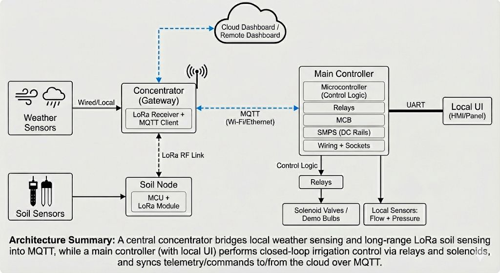

LoRa + MQTT Smart Agriculture Monitoring & Irrigation System
Architected a distributed IoT agricultural automation system engineered to resolve real-world field deployment constraints, including long-range sensor telemetry, network latency, and deterministic actuator control.
The system utilizes a central RF concentrator (gateway) that bridges local wired weather stations and distributed LoRa soil telemetry nodes into a unified MQTT communication architecture. The central edge controller executes precise irrigation logic via solenoid valve relays, while synchronizing telemetry and remote commands over an MQTT broker.
The system utilizes a central RF concentrator (gateway) that bridges local wired weather stations and distributed LoRa soil telemetry nodes into a unified MQTT communication architecture. The central edge controller executes precise irrigation logic via solenoid valve relays, while synchronizing telemetry and remote commands over an MQTT broker.
Greenhouse Wi-Fi IoT Architecture
To manage high-throughput environmental data across the greenhouse, the system implements a localized Wi-Fi sensor network utilizing the ESP32 ecosystem alongside a dedicated MQTT broker.
- [Sensor Nodes] Distributed ESP32 microcontrollers are positioned across the greenhouse. They sample local telemetry and utilize their onboard Wi-Fi to publish real-time data payloads.
- [MQTT Hub] A Raspberry Pi, configured with an MQTT broker, acts as the central hub on the same Wi-Fi network. It orchestrates all message routing, ensuring reliable data flow from the nodes.
- [Main Controller] An Arduino Mega2560 paired with an ESP8266 acts as the master edge controller. It subscribes to the MQTT topics via Wi-Fi, retrieves the aggregated sensor data from the Raspberry Pi, and executes deterministic irrigation and climate control logic.

System Architecture
The concentrator acts as the core communication backbone of the field network, routing data between hardware layers:
- [Local Telemetry] Weather Sensors → Wired Interface → Concentrator
- [Long-Range RF] Soil Nodes (MCU + RF) → LoRa Transceiver → Concentrator
- [Backhaul] Concentrator → MQTT (Mosquitto) → Edge Controller / Cloud
- [Actuation] Main Controller → Relay Drivers → Solenoid Valves
- [Interface] Local UI → Direct Serial/IP connection to Main Controller

Key Contributions
-
Role: Lead Embedded Firmware Engineer
Led the firmware architecture and end-to-end embedded system implementation for the smart agriculture platform. - Edge Controller Firmware: Spearheaded firmware development for the central main controller, implementing deterministic automation logic, sensor polling schedules, and state-machine-based system coordination.
- Wi-Fi Sensor Node Development: Engineered firmware for distributed ESP32 monitoring nodes, optimizing multi-sensor data acquisition and establishing reliable MQTT publish/subscribe routines over local Wi-Fi.
- LoRa Soil Node Development: Engineered low-power firmware for distributed soil monitoring nodes, optimizing multi-sensor data acquisition, ADC preprocessing, and efficient LoRa payload packaging for long-range telemetry.
- RF-to-MQTT Concentrator: Programmed the LoRa gateway concentrator to aggregate high-throughput sensor data from distributed field nodes and publish seamlessly to a Mosquitto MQTT broker for cloud and local consumption.
- Hardware Validation & Bring-up: Collaborated extensively with the hardware team, providing critical support during PCB bring-up, schematic review, component integration, and field-testing.